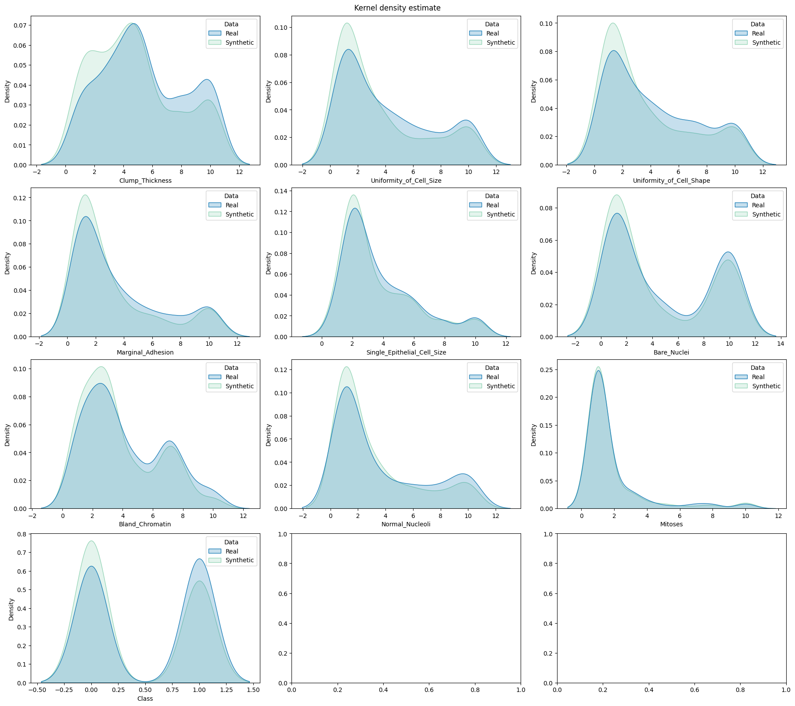

Synthetic Data Generation#
Generate synthetic data with the generators listed below Based on the Wisconsin Breast Cancer Dataset (WBCD)
[1]:
# Standard library
import sys
sys.path.append("..")
# 3rd party packages
import pandas as pd
# Local packages
import config
from generators.ctabgan_generator import CTABGANGenerator
from generators.ctgan_generator import CTGANGenerator
from generators.dataSynthesizer import DataSynthesizerGenerator
from generators.mst_generator import MSTGenerator
from generators.smote import SmoteGenerator
from generators.synthpop_generator import SynthpopGenerator
from generators.findiff_generator import FindiffGenerator
from generators.tvae_generator import TVAEGenerator
Load the real WBCD training dataset#
[2]:
df_real = pd.read_csv("../data/" + config.WBCD_DATASET_TRAIN_FILEPATH.stem + ".csv")
df_real.shape
[2]:
(359, 10)
[3]:
df_real.head()
[3]:
| Clump_Thickness | Uniformity_of_Cell_Size | Uniformity_of_Cell_Shape | Marginal_Adhesion | Single_Epithelial_Cell_Size | Bare_Nuclei | Bland_Chromatin | Normal_Nucleoli | Mitoses | Class | |
|---|---|---|---|---|---|---|---|---|---|---|
| 0 | 10 | 10 | 10 | 3 | 10 | 10 | 9 | 10 | 1 | 1 |
| 1 | 5 | 1 | 2 | 1 | 2 | 1 | 1 | 1 | 1 | 0 |
| 2 | 6 | 10 | 2 | 8 | 10 | 2 | 7 | 8 | 10 | 1 |
| 3 | 4 | 8 | 6 | 4 | 3 | 4 | 10 | 6 | 1 | 1 |
| 4 | 7 | 4 | 7 | 4 | 3 | 7 | 7 | 6 | 1 | 1 |
Create the metadata dictionary#
The continuous and categorical variables need to be specified, as well as the variable to predict for the future learning task (used by SMOTE)#
[4]:
metadata = {
"continuous": [
"Clump_Thickness",
"Uniformity_of_Cell_Size",
"Uniformity_of_Cell_Shape",
"Marginal_Adhesion",
"Single_Epithelial_Cell_Size",
"Bland_Chromatin",
"Normal_Nucleoli",
"Mitoses",
"Bare_Nuclei",
],
"categorical": ["Class"],
"variable_to_predict": "Class",
}
Choose the generator#
[5]:
generator = "synthpop" # to choose among this list: ["synthpop", "smote", "datasynthesizer", "mst", "ctgan", "tvae", "ctabgan", "findiff"]
Synthpop#
[6]:
if generator == "synthpop":
gen = SynthpopGenerator(
df=df_real,
metadata=metadata,
random_state=66, # for reproducibility, can be set to None
generator_filepath=None, # to load an existing generator,
variables_order=None, # use the dataframe columns order by default
)
SMOTE#
[7]:
if generator == "smote":
gen = SmoteGenerator(
df=df_real,
metadata=metadata,
random_state=66, # for reproducibility, can be set to None
generator_filepath=None, # to load an existing generator,
k_neighbors=None, # cannot be found by searching the best hyperparameters yet, set to 5 by default
)
Datasynthesizer#
[8]:
if generator == "datasynthesizer":
gen = DataSynthesizerGenerator(
df=df_real,
metadata=metadata,
random_state=66, # for reproducibility, can be set to None
generator_filepath=None, # to load an existing generator
candidate_keys=None, # the identifiers
epsilon=0, # for the differential privacy
degree=2, # the maximal number of parents for the bayesian network
)
MST#
[9]:
if generator == "mst":
gen = MSTGenerator(
df=df_real,
metadata=metadata,
random_state=66, # for reproducibility, can be set to None
generator_filepath=None, # to load an existing generator
epsilon=1.0, # the privacy budget of the differential privacy
delta=1e-9, # the failure probability of the differential privacy
)
CTGAN#
[10]:
if generator == "ctgan":
gen = CTGANGenerator(
df=df_real,
metadata=metadata,
random_state=66, # for reproducibility, can be set to None
generator_filepath=None, # to load an existing generator
discriminator_steps=4, # the number of discriminator updates to do for each generator update
epochs=300, # the number of training epochs
batch_size=100, # the batch size for training
)
TVAE#
[11]:
if generator == "tvae":
gen = TVAEGenerator(
df=df_real,
metadata=metadata,
random_state=66, # for reproducibility, can be set to None
generator_filepath=None, # to load an existing generator
epochs=300, # the number of training epochs
batch_size=100, # the batch size for training
compress_dims=(249, 249), # the size of the hidden layers in the encoder
decompress_dims=(249, 249), # the size of the hidden layers in the decoder
)
CTAB-GAN+#
[12]:
if generator == "ctabgan":
gen = CTABGANGenerator(
df=df_real,
metadata=metadata,
random_state=66, # for reproducibility, can be set to None
generator_filepath=None, # to load an existing generator
mixed_columns=None, # dictionary of "mixed" column names with corresponding categorical modes
log_columns=None, # list of skewed exponential numerical columns
integer_columns=metadata[
"continuous"
], # list of numeric columns without floating numbers
class_dim=(
256,
256,
256,
256,
), # size of each desired linear layer for the auxiliary classifier
random_dim=100, # dimension of the noise vector fed to the generator
num_channels=64, # number of channels in the convolutional layers of both the generator and the discriminator
l2scale=1e-5, # rate of weight decay used in the optimizer of the generator, discriminator and auxiliary classifier
batch_size=150, # batch size for training
epochs=500, # number of training epochs
)
FinDiff#
[6]:
if generator == "findiff":
gen = FinDiffGenerator(
df=df_real,
metadata=metadata,
random_state=66, # for reproducibility, can be set to None
generator_filepath=None, # to load an existing generator
learning_rate=1e-4, # the learning rate for training
batch_size=512, # the batch size for training and sampling
diffusion_steps=500, # the diffusion timesteps for the forward diffusion process
epochs=500, # the training iterations
mpl_layers=[1024, 1024, 1024, 1024], # the width of the MLP layers
activation= "lrelu", # the activation fuction
dim_t = 64, # dimensionality of the intermediate layer for connecting the embeddings
cat_emb_dim = 2, # dimension of categorical embeddings
diff_beta_start_end = [1e-4, 0.02], # diffusion start and end betas
scheduler = "linear", # diffusion scheduler
)
Fit the generator to the real data#
[14]:
gen.preprocess()
gen.fit(save_path="../results/generators") # the path should exist
Display the fitted generator#
[15]:
gen.display()
Constructed sequential trees:
Clump_Thickness has parents []
Uniformity_of_Cell_Size has parents ['Clump_Thickness']
Uniformity_of_Cell_Shape has parents ['Clump_Thickness', 'Uniformity_of_Cell_Size']
Marginal_Adhesion has parents ['Clump_Thickness', 'Uniformity_of_Cell_Size', 'Uniformity_of_Cell_Shape']
Single_Epithelial_Cell_Size has parents ['Clump_Thickness', 'Uniformity_of_Cell_Size', 'Uniformity_of_Cell_Shape', 'Marginal_Adhesion']
Bare_Nuclei has parents ['Clump_Thickness', 'Uniformity_of_Cell_Size', 'Uniformity_of_Cell_Shape', 'Marginal_Adhesion', 'Single_Epithelial_Cell_Size']
Bland_Chromatin has parents ['Clump_Thickness', 'Uniformity_of_Cell_Size', 'Uniformity_of_Cell_Shape', 'Marginal_Adhesion', 'Single_Epithelial_Cell_Size', 'Bare_Nuclei']
Normal_Nucleoli has parents ['Clump_Thickness', 'Uniformity_of_Cell_Size', 'Uniformity_of_Cell_Shape', 'Marginal_Adhesion', 'Single_Epithelial_Cell_Size', 'Bare_Nuclei', 'Bland_Chromatin']
Mitoses has parents ['Clump_Thickness', 'Uniformity_of_Cell_Size', 'Uniformity_of_Cell_Shape', 'Marginal_Adhesion', 'Single_Epithelial_Cell_Size', 'Bare_Nuclei', 'Bland_Chromatin', 'Normal_Nucleoli']
Class has parents ['Clump_Thickness', 'Uniformity_of_Cell_Size', 'Uniformity_of_Cell_Shape', 'Marginal_Adhesion', 'Single_Epithelial_Cell_Size', 'Bare_Nuclei', 'Bland_Chromatin', 'Normal_Nucleoli', 'Mitoses']
Generate the synthetic data#
[16]:
df_synth = gen.sample(
save_path="../results/data", # the path should exist
num_samples=len(
df_real
), # can be different from the real data, but for computing the utility metrics should be the same
)
[17]:
df_synth.head()
[17]:
| Clump_Thickness | Uniformity_of_Cell_Size | Uniformity_of_Cell_Shape | Marginal_Adhesion | Single_Epithelial_Cell_Size | Bare_Nuclei | Bland_Chromatin | Normal_Nucleoli | Mitoses | Class | |
|---|---|---|---|---|---|---|---|---|---|---|
| 0 | 8 | 3 | 4 | 3 | 6 | 10 | 3 | 1 | 1 | 1 |
| 1 | 3 | 1 | 1 | 3 | 2 | 1 | 1 | 1 | 1 | 0 |
| 2 | 5 | 1 | 1 | 1 | 2 | 1 | 3 | 1 | 1 | 0 |
| 3 | 10 | 7 | 5 | 6 | 3 | 5 | 3 | 3 | 1 | 1 |
| 4 | 2 | 7 | 10 | 10 | 7 | 9 | 7 | 10 | 3 | 1 |
[18]:
import matplotlib.pyplot as plt
import utils.draw
fig, axes = plt.subplots( # manually set number of cols/rows
nrows=4, ncols=3, squeeze=0, figsize=(18, 16), layout="constrained"
)
axes = axes.reshape(-1)
utils.draw.kde_plot_hue_plot_per_col(
df=df_real,
df_nested=df_synth,
original_name="Real",
nested_name="Synthetic",
hue_name="Data",
title="Kernel density estimate",
axes=axes,
)

[ ]: